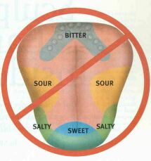

Back to Franz Bardon Research
Taste is an important sensory modality which we must train like any other in step 3 of IIH. There exists an outdated model of a "taste map" which is completely wrong : any hermeticist should know about it.
For further reading about newest research in this area refer to the very good march 2001 article in The Scientific American, page 26 by David V. Smith and Robert F Margolskee.
 OUDATED "TONGUE MAP" has continued to appear in textbooks even though it was based on misinterpretation of research done in the 19th century.
0ne of the most dubious "facts" about taste - and one that is commonly reproduced in textbooks - is the oft-cited but misleading "tongue map" showing large regional differences in sensitivity across the human tongue. These maps indicate that sweetness is detected by taste buds an the tip of the tongue, sourness on the sides, bitterness at the back and saltiness along the edges.
Taste researchers have known for many years that these tongue maps are wrong. The maps arose early in the 20th century as a result of a misinterpretation of research reported in the late 1800s, and they have been almost impossible to purge from the literature.
In reality, all qualities of taste can be elicited from all the regions of the tongue that contain taste buds. At present, we have no evidence that any kind of spatial segregation of sensitivities contributes to the neural representation of taste quality although there are some slight differences in sensitivity across the tongue and palate, especially rodents.David V. Smith and Robert F Margolskee

This page hosted by  Get your own Free Home Page
Get your own Free Home Page